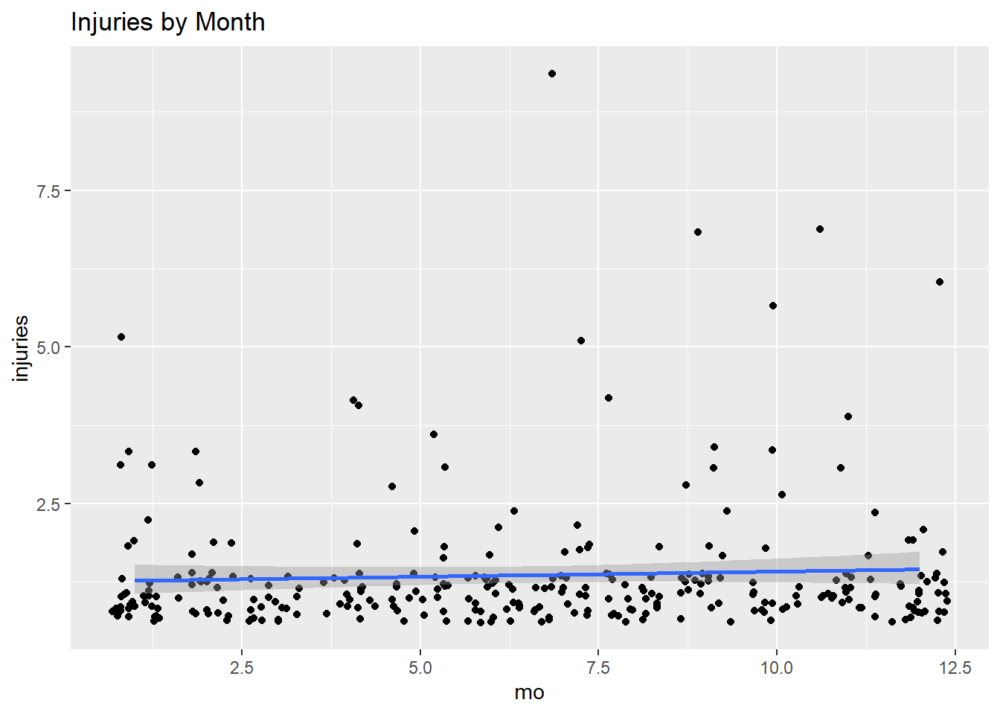

7.3 Ordinal Logistic Regression
These notes rely on UVA, PSU STAT 504 class notes, and Laerd Statistics.
The ordinal logistic regression model is
\[logit[P(Y \le j)] = \log \left[ \frac{P(Y \le j)}{P(Y \gt j)} \right] = \alpha_j - \beta X, \hspace{5mm} j \in [1, J-1]\] where \(j \in [1, J-1]\) are the levels of the ordinal outcome variable \(Y\). The proportional odds model assumes there is a common set of slope parameters \(\beta\) for the predictors. The ordinal outcomes are distinguished by the \(J-1\) intercepts \(\alpha_j\). The benchmark level is \(J\).
Technically, the model could be written \(logit[P(Y \le j)] = \alpha_j + \zeta X\), replacing beta with zeta because the model fits \(\alpha_j - \beta X\) instead of \(\alpha_j + \beta X\).
Suppose you want to model the probability a respondent holds a political ideology [“Socialist”, “Liberal”, “Moderate”, “Conservative”, “Libertarian”] given their party affiliation [“Republican”, “Democrat”].
## ideo
## party Socialist Liberal Moderate Conservative Libertarian
## Rep 30 46 148 84 99
## Dem 80 81 171 41 557.3.1 Assumptions
Ordinal regression makes four assumptions about the underlying data. One is that the response variable is ordinal (duh). The second is that the explanatory variables are continuous or categorical. You can include ordinal variables, but you need to treat them either as continous or categorical. Third, there is no multicollinearity. Fourth, the odds are proportional, meaning each independent variable has an identical effect at each cumulative split of the ordinal dependent variable. Test for proportionality with a full likelihood ratio test comparing the fitted location model to a model with varying location parameters. This test can sometimes flag violations that do not exist, so can also run separate binomial logistic regressions on cumulative dichotomous dependent variables to further determine if this assumption is met.
7.3.2 Modeling
Fit a proportional odds logistic regression.
## Call:
## MASS::polr(formula = ideo ~ party, data = ideology)
##
## Coefficients:
## Value Std. Error t value
## partyDem -0.975 0.129 -7.54
##
## Intercepts:
## Value Std. Error t value
## Socialist|Liberal -2.469 0.132 -18.736
## Liberal|Moderate -1.475 0.109 -13.531
## Moderate|Conservative 0.237 0.094 2.516
## Conservative|Libertarian 1.070 0.104 10.292
##
## Residual Deviance: 2474.98
## AIC: 2484.98The log-odds a Democrat identifies as Socialist vs >Socialist, or equivalently, the log-odds a Democrat identifies as <=Socialist vs >=Liberal is
\[logit[P(Y \le 1)] = -2.4690 - (-0.9745)(1) = -1.4945\]
which translates into an odds of
\[odds(Y<=1) = exp(logit[P(Y \le 1)]) = \frac{exp(-2.469)}{exp(-0.9745)} = 0.2244\]
It is the same for Republicans, except multiply the slope coefficient by zero.
\[logit[P(Y \le 1)] = -2.4690 - (-0.9745)(0) = -2.4690\]
\[odds(Y<=1) = exp(logit[P(Y \le 1)]) = \frac{exp(-2.469)}{exp(0)} = -2.4690\]
The “proportional odds” part of the proportional odds model is that the ratios of the \(J - 1\) odds are identical for each level of the predictors. The numerators are always the same, and the denominators differ only by the exponent of the slope coefficient, \(-0.9745\). For all \(j \in [1, J-1]\), the odds a Democrat’s ideology is \(\le j\) vs \(>j\) is \(exp(-0.9745) = 2.6498\) times that of a Republican’s odds.
You can translate the cumulative odds to cumulative probabilities by taking the ratio \(\pi = exp(odds) / (1 + exp(odds))\). The probability a Democrat identifies as <=Socialist vs >Socialist is
\[P(Y \le 1) = \frac{exp(-1.4945)} {(1 + exp(-1.4945))} = 0.183.\]
The individual probabilities are just the successive differences in the cumulative probabilities. The log odds a Democrat identifies as <=Liberal vs >Liberal are \(logit[P(Y \lt 2)] = -1.4745 - (-0.9745)(1) = -0.500\), which translates into a probability of \(P(Y \le 2) = exp(-0.5) / (1 + exp(-0.5)) = 0.378\). The probability a Democrat identifies as Liberal is the difference in adjacent cumulative probabilities, \(P(Y \le 2) - P(Y \le 1) = 0.378 = 0.183 = 0.194\). This is how the model to predicts the level probabilities.
x <- predict(pom, newdata = data.frame(party = c("Dem", "Rep")), type = "probs")
rownames(x) <- c("Dem", "Rep")
print(x)## Socialist Liberal Moderate Conservative Libertarian
## Dem 0.183 0.19 0.39 0.11 0.11
## Rep 0.078 0.11 0.37 0.19 0.26Always check the assumption of proportional odds. One way to do this is by comparing the proportional odds model with a multinomial logit model, also called an unconstrained baseline logit model. The multinomial logit model models unordered responses and fits a slope to each level of the \(J – 1\) responses. The proportional odds model is nested in the multinomial model, so you can use a likelihood ratio test to see if the models are statistically different.
## # weights: 15 (8 variable)
## initial value 1343.880657
## iter 10 value 1239.866743
## final value 1235.648615
## convergedCalculate the difference in the deviance test statistics \(D = -2 loglik(\beta)\).
G <- -2 * (logLik(pom)[1] - logLik(mlm)[1])
pchisq(G, df = length(pom$zeta) - 1, lower.tail = FALSE)## [1] 0.3The p-value is high, so do not reject the null hypothesis that the proportional odds model fits differently than the more complex multinomial logit model.
7.3.3 Case Study
The General Social Survey for year 1972, 1973, and 1974 surveyed caucasian Christians about their attitudes att toward abortion. Respondents were classified by years of education edu and religious group att.
## # A tibble: 27 x 6
## year rel edu Neg Mix Pos
## <fct> <fct> <fct> <dbl> <dbl> <dbl>
## 1 1972 Prot Low 9 12 48
## 2 1972 Prot Med 13 43 197
## 3 1972 Prot High 4 9 139
## 4 1972 SProt Low 9 17 30
## 5 1972 SProt Med 6 10 97
## 6 1972 SProt High 1 8 68
## 7 1972 Cath Low 14 12 32
## 8 1972 Cath Med 18 50 131
## 9 1972 Cath High 8 13 64
## 10 1973 Prot Low 4 16 59
## # ... with 17 more rowsFit a proportional-odds cumulative logit model with just main effects. There are two main effects for year, two for rel, and two for edu, plus two logit equations for the response for a total of eight parameters.
## Call:
## MASS::polr(formula = att ~ year + rel + edu, data = abort, weights = cnt)
##
## Coefficients:
## Value Std. Error t value
## year1973 0.221 0.105 2.11
## year1974 0.233 0.106 2.20
## relSProt -0.249 0.113 -2.19
## relCath -0.796 0.100 -7.93
## eduMed 0.717 0.109 6.59
## eduHigh 1.127 0.128 8.79
##
## Intercepts:
## Value Std. Error t value
## Neg|Mix -2.33 0.14 -17.27
## Mix|Pos -0.79 0.12 -6.49
##
## Residual Deviance: 4059.32
## AIC: 4075.32All predictors are significant. Now fit the saturated model.
## Call:
## MASS::polr(formula = att ~ year * rel * edu, data = abort, weights = cnt)
##
## Coefficients:
## Value Std. Error t value
## year1973 0.3422 0.365 0.9370
## year1974 -0.0144 0.361 -0.0398
## relSProt -0.6274 0.366 -1.7141
## relCath -0.7238 0.369 -1.9620
## eduMed 0.5036 0.301 1.6743
## eduHigh 1.6007 0.390 4.1068
## year1973:relSProt 0.1093 0.524 0.2088
## year1974:relSProt 0.4387 0.521 0.8421
## year1973:relCath 0.3895 0.539 0.7228
## year1974:relCath 0.8696 0.559 1.5543
## year1973:eduMed 0.2805 0.441 0.6365
## year1974:eduMed 0.5487 0.430 1.2761
## year1973:eduHigh -0.5961 0.540 -1.1031
## year1974:eduHigh -0.1175 0.541 -0.2171
## relSProt:eduMed 1.1421 0.479 2.3849
## relCath:eduMed 0.1275 0.424 0.3004
## relSProt:eduHigh 0.3039 0.586 0.5186
## relCath:eduHigh -0.5623 0.532 -1.0572
## year1973:relSProt:eduMed -1.2710 0.667 -1.9069
## year1974:relSProt:eduMed -1.3331 0.668 -1.9952
## year1973:relCath:eduMed -0.8360 0.629 -1.3291
## year1974:relCath:eduMed -0.8973 0.647 -1.3879
## year1973:relSProt:eduHigh 0.9047 0.878 1.0309
## year1974:relSProt:eduHigh -0.4321 0.805 -0.5369
## year1973:relCath:eduHigh -0.2265 0.749 -0.3021
## year1974:relCath:eduHigh -0.9896 0.766 -1.2915
##
## Intercepts:
## Value Std. Error t value
## Neg|Mix -2.311 0.267 -8.647
## Mix|Pos -0.761 0.261 -2.922
##
## Residual Deviance: 4018.27
## AIC: 4074.27Compare the two models.
## Likelihood ratio tests of ordinal regression models
##
## Response: att
## Model Resid. df Resid. Dev Test Df LR stat. Pr(Chi)
## 1 year + rel + edu 3229 4059
## 2 year * rel * edu 3209 4018 1 vs 2 20 41 0.0037The likelihood ratio test indicates the main-effects model fits poorly in comparison to the saturated model (LR = 41.0, df = 20, p < 0.01). From the table of coefficients,the effects of religion and education appear to be much more powerful than the year, so consider modeling an interaction between rel and edu. This is also what the stepwise AIC algorithm recommends.
## Call:
## MASS::polr(formula = att ~ year + rel + edu + rel:edu, data = abort,
## weights = cnt)
##
## Coefficients:
## Value Std. Error t value
## year1973 0.228 0.105 2.171
## year1974 0.241 0.106 2.271
## relSProt -0.450 0.213 -2.110
## relCath -0.348 0.223 -1.556
## eduMed 0.750 0.177 4.230
## eduHigh 1.369 0.219 6.244
## relSProt:eduMed 0.253 0.267 0.946
## relCath:eduMed -0.389 0.260 -1.496
## relSProt:eduHigh 0.385 0.336 1.146
## relCath:eduHigh -0.944 0.307 -3.079
##
## Intercepts:
## Value Std. Error t value
## Neg|Mix -2.26 0.17 -13.28
## Mix|Pos -0.72 0.16 -4.49
##
## Residual Deviance: 4040.44
## AIC: 4064.44Compare the model with the rel:edu interaction to the saturated model.
## Likelihood ratio tests of ordinal regression models
##
## Response: att
## Model Resid. df Resid. Dev Test Df LR stat. Pr(Chi)
## 1 year + rel + edu + rel:edu 3225 4040
## 2 year * rel * edu 3209 4018 1 vs 2 16 22 0.14Great, this time they are not significantly different (LR = 22.2, df = 16, p = 0.138). Interpret the results.
Positive coefficients mean attitudes toward legalizing abortion are more positive relative to the reference year, 1972. The odds of supporting legalization in 1973 compared to 1972 were \(exp(0.2281) = 1.26\). The odds for 1974 vs 1972 were \(exp(0.2410) = 1.27\), so attitudes toward abortion became more positive from 1972 to 1973, but remained nearly unchanged from 1973 to 1974.
Among Protestants (reference religious group), increasing education is associated with more positive attitudes toward abortion legalization. The odds of a Protestant with medium education vs low education supporting legalization are \(exp(0.7504) = 2.12\). Among Southern Protestants, odds are \(exp(0.7504 + 0.2526) = 2.73\). Therefore, the estimated effects of education for Southern Protestants are in the same direction as for Protestants but are somewhat larger. Note, however, that the interaction effect coefficient is not not significantly different from zero, so the effect of education among Protestants and Southern Protestants is not significantly different.
Among Catholics, the medium vs low education odds are \(exp(0.7504- 0.3892) = 1.44\). And the high vs low education odds are \(exp(1.3689 - 0.9442) = 1.53\). Increasing education is still associated with more positive attitudes, but the effects are smaller than they are among Protestants and Southern Protestants.

Example Summarization
We used logistic regression to investigate whether groups with the Christian religion might moderate the effects of education on attitudes toward abortion legalization. For Protestants, higher education education was associated with higher, significant, increase of odds of a more positive attitude toward abortion legalization, b = 0.7504, SE = 0.1774, OR = 2.12, p < .01. There was a significant interaction for Catholics at high levels of education, b = -0.9442, SE = 0.3066, p < .01, relative to the Protestant reference group, but no significant interaction at medium education, and no interaction at all for Southern Protestants relative to the reference group. The figure above graphs the interaction, showing the change in the expected probability of positive attitude by education level for Protestant, Southern Protestant, and Catholic religious groups. Overall, the significant interaction for Catholics at high levels of education suggests that education has a different relationship to attitudes toward abortion depending on the individual’s religious group, but the difference between Protestant and Southern Protestant is minimal.